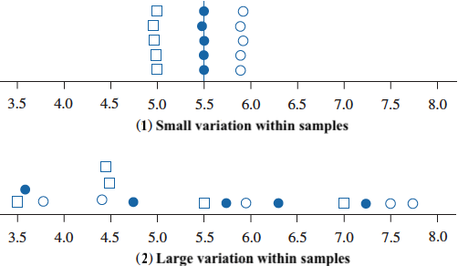
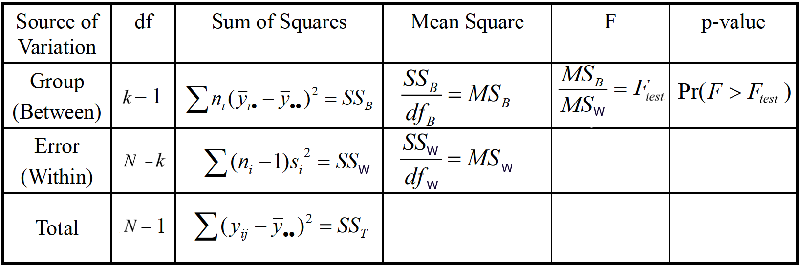
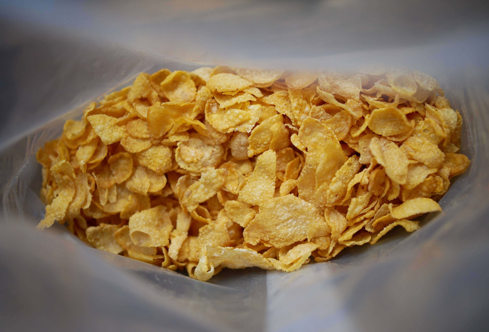
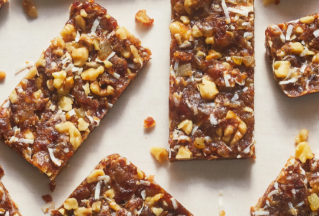
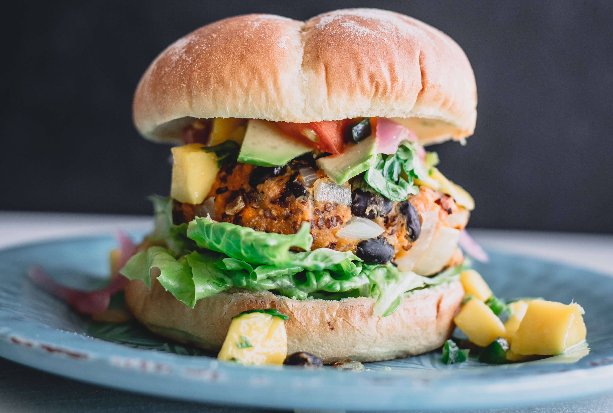
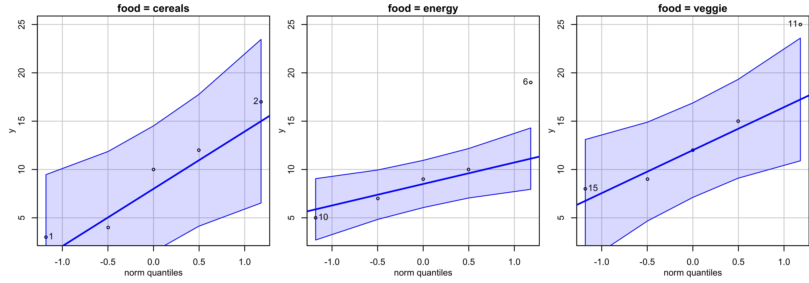

Analysis of Variance (ANOVA)
MATH 4720/MSSC 5720 Introduction to Statistics
Dr. Cheng-Han Yu
Department of Mathematical and Statistical Sciences
Marquette University
Department of Mathematical and Statistical Sciences
Marquette University
One-Way Analysis of Variance (ANOVA)
Rationale
Procedure
Examples
ANOVA Rationale
Comparing More Than Two Population Means
In many research settings, we’d like to compare 3 or more population means.
4 types of devices used to determine the pH of soil samples.
Determine whether there are differences in the mean readings of those 4 devices.
- Do different treatments (None, Fertilizer, Irrigation, Fertilizer and Irrigation) affect the mean weights of poplar trees?
One-Way Analysis of Variance
A factor is a property or characteristic (categorical variable) that allows us to distinguish the different populations from one another.
Type of devices and treatment of trees are factors.
One-way ANOVA examines the effect of a categorical variable on the mean of a numerical variable (response).
We use analysis of variance to test the equality of 3 or more population means. 🤔
The method is one-way because we use one single property (categorical variable) for categorizing the populations.
Requirements of One-Way ANOVA
The populations of each category are normally distributed.
The populations have the same variance \(\sigma^2\) (two-sample pooled \(t\)-test).
The samples are random samples.
The samples are independent of each other. (not matched or paired in any way)
Rationale for ANOVA
Data 1 and Data 2 have the same group sample means \(\bar{y}_1\), \(\bar{y}_2\) and \(\bar{y}_3\) denoted as red dots.

Which data you are more confident to say the population means \(\mu_1\), \(\mu_2\) and \(\mu_3\) are not all the same?
Variation Between Samples & Variation Within Samples
Data 1: Variability between samples is large in comparison to the variation within samples.
Data 2: Variation between samples is small relatively to the variation within samples.
More confident to conclude there is a difference in population means when variation between samples is relatively larger than variation within samples.

ANOVA Procedures
ANOVA Table

ANOVA Data
There are 5 populations.
Within each population, 4 data points are collected.
Data \(y_{ij}\) is the the \(j\)-th data point in the \(i\)-th group.
| Population | Data | Sample Mean | Population Mean |
|---|---|---|---|
| 1 | \(y_{11}\) \(\quad\) \(y_{12}\) \(\quad\) \(y_{13}\) \(\quad\) \(y_{14}\) | \(\bar{y}_{1}\) | \(\mu_{1}\) |
| 2 | \(y_{21}\) \(\quad\) \(y_{22}\) \(\quad\) \(y_{23}\) \(\quad\) \(y_{24}\) | \(\bar{y}_{2}\) | \(\mu_{2}\) |
| 3 | \(y_{31}\) \(\quad\) \(y_{32}\) \(\quad\) \(y_{33}\) \(\quad\) \(y_{34}\) | \(\bar{y}_{3}\) | \(\mu_{3}\) |
| 4 | \(y_{41}\) \(\quad\) \(y_{42}\) \(\quad\) \(y_{43}\) \(\quad\) \(y_{44}\) | \(\bar{y}_{4}\) | \(\mu_{4}\) |
| 5 | \(y_{51}\) \(\quad\) \(y_{52}\) \(\quad\) \(y_{53}\) \(\quad\) \(y_{54}\) | \(\bar{y}_{5}\) | \(\mu_{5}\) |
This is NOT a tidy data matrix. We may need to save the data in another format before we do ANOVA.
Procedure of ANOVA
- \(\begin{align} &H_0: \mu_1 = \mu_2 = \cdots = \mu_k\\ &H_1: \text{Population means are not all equal} \end{align}\)
- Statistician Ronald Fisher found a way to define a variable that follows the \(F\) distribution:
\[\frac{\text{variance between samples}}{\text{variance within samples}} \sim F_{df_B,\, df_W}\]
- If variance between samples is larger than variance within samples, i.e., \(F_{test}\) is much greater than 1, as Data 1, we reject \(H_0\).
Key: Define variance between samples and variance within samples so that the ratio is \(F\) distributed.
Variance Within Samples
- Back to two-sample pooled \(t\)-test with equal variance \(\sigma^2\):
\[s_p^2 = \frac{(n_1-1)s_1^2 + (n_2-1)s_2^2}{n_1 + n_2 - 2}\]
What if general \(k\) samples?
- ANOVA assumes the populations have the same variance \(\sigma_1^2 = \sigma_2^2 = \cdots = \sigma_k^2 = \sigma^2\).
\[\boxed{s_W^2 = \frac{(n_1-1)s_1^2 + (n_2-1)s_2^2 + \cdots + (n_k-1)s_k^2}{n_1 + n_2 + \cdots + n_k - k}}\] where \(s_i^2\), \(i = 1, \dots ,k\), is the sample variance of group \(i\).
- \(s_W^2\) represents a combined estimate of the common variance \(\sigma^2\). It measures variability of the observations within the \(k\) populations.
Variance Between Samples
\[\boxed{s^2_{B} = \frac{\sum_{i=1}^k n_i (\bar{y}_{i} - \bar{y}_{})^2}{k-1}}\]
\(\bar{y}_{i}\) is the \(i\)-th sample mean.
\(\bar{y}_{}\) is the grand sample mean with all data points in all groups combined.
\(s^2_{B}\) is also an estimate of \(\sigma^2\) and measures variability among sample means for the \(k\) groups.
-
If \(H_0\) is true \((\mu_1 = \cdots = \mu_k = \mu)\), any variation in the sample means is due to chance and randomness, and shouldn’t be too large.
- \(\bar{y}_{1}, \cdots, \bar{y}_{k}\) should be close each other, and they are close to \(\bar{y}_{}\).
\(s_B^2\) and \(s_W^2\) as Sum of Squares/Degrees of Freedom
Variance is defined as \(\frac{\text{Sum of Squares}}{\text{Degrees of Freedom}}\), which is also called \(\text{Mean Square (MS)}\)
\(s_B^2 = \frac{\sum_{i=1}^k n_i (\bar{y}_{i} - \bar{y}_{})^2}{k-1} = \frac{\text{Sum of Squares Between Samples (SSB)}}{df_B} = MSB\)
\(s_W^2 = \frac{\sum_{i=1}^{k} (n_i - 1)s_i^2}{n_1 + n_2 + \cdots + n_k - k} = \frac{\text{Sum of Squares Within Samples (SSW)}}{df_W} = MSW\) \((N = n_1 + \cdots + n_k)\)
Sum of Squares Identity
\[\text{Total Sum of Squares (SST)} = \sum_{j=1}^{n_i}\sum_{i=1}^{k} \left(y_{ij} - \bar{y}_{}\right)^2 = SSB + SSW\]
\[df_{T} = df_{B} + df_{W} \implies N - 1 = (k-1) + (N - k)\]
Sum of Squares Identity
\(F_{test} = \frac{MSB}{MSW}\)
Under \(H_0\), \(\frac{S^2_{B}}{S_W^2} \sim F_{k-1, \, N-k}\)
-
Reject \(H_0\) if
- \(F_{test} > F_{\alpha, \, k - 1,\, N-k}\)
- \(p\)-value \(P(F_{k - 1,\, N-k} > F_{test}) < \alpha\)
ANOVA Examples
Example
- A hypothesis is that a nutrient “Isoflavones” varies among three types of food: (1) cereals and snacks, (2) energy bars, and (3) veggie burgers.



A sample of 5 each is taken and the amount of isoflavones is measured.
Is there a sufficient evidence to conclude that the mean isoflavone levels vary among these food items? \(\alpha = 0.05\).
Example - Data
data 1 2 3
1 3 19 25
2 17 10 15
3 12 9 12
4 10 7 9
5 4 5 8Here columns represent food items and rows are samples.
So tell me what is the value of \(y_{23}\)!
Example - Boxplot

Example - Test Assumptions
- Assumptions:
- \(\sigma_1 = \sigma_2 = \sigma_3\) (I tested it)
- Data are generated from a normal distribution for each type of food.

Example - ANOVA Testing
- \(\begin{align}&H_0: \mu_1 = \mu_2 = \mu_3\\&H_1: \mu_is \text{ not all equal} \end{align}\)
😎 Do all calculations and generate an ANOVA table using just one line of code! 🤟 ✌️
Example - ANOVA Table
Analysis of Variance Table
Response: y
Df Sum Sq Mean Sq F value Pr(>F)
food 2 60.4 30.20 0.828 0.46
Residuals 12 437.6 36.47